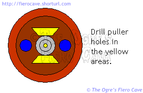
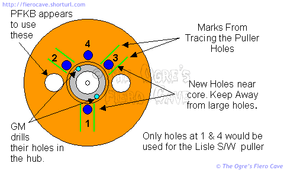
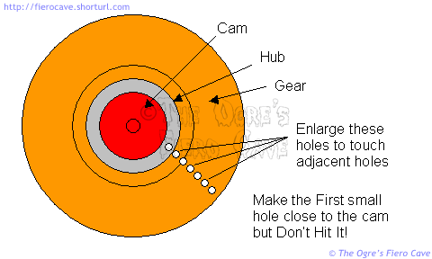

Go Home
Site Map
Go Home
Site Map
4 Cylinder Timing Gears
NOTICE! This is an unfinished document. It is a collection of all the stuff I've come up with tested or not... USE IT AT YOUR OWN RISK!
Anywho...
Cam jobs suck under the best of conditions. The majority of FWD and Fiero cams are never fun to work on. Here's a collection of stuff I've gathered up that should help.
One item that surprised me... GM actually built the 87+ 4 cylinders with a simple steel crank pulley. As cheap as GM is, that one was still surprising. Harmonic balancers are usually considered a critical part of the crank set. The good news is they did revise the parts list and you can get a real harmonic balancer for them.
I'm working on methods for changing the cam pulley using common tools. I've included that material here even though it's only in the development phase. I figure there's enough there that more advanced people can use or adapt it as needed. I'm sure there is some kink in it that still needs a good beating.
Back On Holiday has posted a large number of pictures he shot while doing his timing set.
- Here's the original Forum Thread. This thread has grown to 2MB plus in size and may be difficult for some readers to download. (IE Users, Right Click stubborn images and then click Show Picture.)
- I've created a compact version of the thread here. This version is less than 800KB. The images are smaller and I adjusted brightness and contrast to expose more detail.
I've also consolidated the GM parts listed here and in the forum. You can get them at GM Parts Direct. (This table doesn't include Vin U parts.)
|
GM Part # |
Category |
Description |
Pack Qty |
|---|---|---|---|
|
12508079 |
Engine Camshaft Thrust Washer |
BEARING K |
1 |
|
10243247 |
Engine Front Cover and Crankshaft Seal |
SEAL ASM- |
1 |
|
10101790 |
Engine Camshaft Sprocket |
GEAR SET- |
1 |
|
10101369 |
Engine Crankshaft and Camshaft Balancer |
DAMPER AS |
1 |
I recommend a new thrust plate anytime the gears are replaced. A crappy thrust plate isn't going to help your new gears any. For less than $6 it's cheap insurance.
It appears that the newer thrust plates have added holes to help with oil distribution in the hub area. I don't know if the hole in the oil gallery plug is still needed with the new thrust plate. I tend to lean toward adding the hole because it should also get more oil to the gear teeth. I don't think the revised thrust plate would help that.
Revised Parts
Quite some time ago, GM changed the timing gear numbers from individual parts to mated sets. If your 22P book or other old list shows them as separate parts, those numbers are invalid. Always replace the timing gears as a set no matter where you get them! The crank gear may look ok but even subtle wear can cause a problem with a new cam gear.
GM revised the crank pulley on later model 2.5l. The original is simply a steel pulley with no harmonic balancer function. In Fiero this applies to the 87-88 4 cyl. I've also included the U VIN version of the 4 cyl for those that may have acquired one thru an engine swap. [My notes in square brackets]
"It is also recommended that a crankshaft torsional damper [AKA Harmonic Balancer] be installed along with the [timing] gear set. The damper reduces critical crankshaft vibrations thereby decreasing [gear set] wear. When the new damper is installed, the old crankshaft pulley may be discarded. If the engine already has a damper, it should be reinstalled."
|
VIN code |
Year |
Gear # |
Damper # |
|---|---|---|---|
|
R V or 2 |
77-86 |
10101790 |
N/A Use Original |
|
R |
87-90 |
10101790 |
10101369 |
|
U |
85-86 |
10101789 |
10112485 |
|
U |
87-89 |
10101789 |
10124651 |
Source: GM TSB 90-6-21, Dated 02/90, Servicing Camshaft/Crankshaft Gears (Install Torsional Damper)
I've given both the GM timing set number and the damper number. I don't know what the damper costs from the dealer. I have found it in inventory for the 87+ R motors, so it's still out there. I've also listed 3 third party replacements at the end of this page.
Harmonic Balancers are just plain good for the motor. They reduce timing gear and crank bearing wear and may give slight improvements to fuel economy and HP. Installing the new balancer is strongly recommended.
Update:
I've installed a balancer. (8/14, Old pulley was worn and the seal was leaking.)
Pulley/Balancer center Bolt is torque to 100 ft/lbs.
Dorman and others sells harmonic balancer without standard puller holes. The unthreaded holes are drill to take 1/2 bolts. If you email Dorman, their "support" won't help you.
If you need to pull the balancer:
- Get 3 Bolts, 1/2" Coarse thread, 3-4 inches long.
- Tap the holes with 1/2" Coarse Tap. If tapping is done after install, note that a normal Tap will hit the Timing Cover and the hole can have tight threads at bottom. (If needed a 1/2-13 bottoming tap will help to thread after install. Problem is that Bottoming Taps are harder to start the threading operation for most people.)
- Often can't find a puller will take 1/2 bolts. You need to grind open a bit of each slot. I used Dremel tool with 932 Aluminum oxide grinding stone. (This also means you need to BUY a puller. Loners/rentals do not like you to mod the tool.) The puller is still good but you need heavy washers so that normal bolts can't go thru if you hit fat areas later.
If the balance is tight then load up the puller and carefully hit each bolt on the head. Expect 1/8-1/4 turn of puller screw to start with. Don't beat them! Just vibrate the balancer to get it to move. Load up the puller again and repeat. First time can take awhile. Is easier with 2-3 pound hammer and just bump the bolts. After you do this a few time, the puller will finish without hitting. (Don't hit the balancer itself! You can wreck it.)
Fiber (Phenolic) vs. Metal Cam Gear
There is a ton of debate over replacing the Phenolic cam gear with a solid metal one. While many people say a solid metal gear is better, I have my doubts.
Here are a few things to think about...
Various types of composite gears have been used in timing sets since at least the mid 60's that I've seen. They may go back further than that. My 1968 289 Ford motor had a nylon tooth driven gear in it's chain set. There's allot of well-established technology behind using these gears in the Fiero motors.
The original Phenolic cam gear is lasting well over 100,000 miles and a dozen or more years in most cases. The odds are good the next one will outlast the rest of the engine and for many people, the rest of the car.
If you think 100,000 miles is too short a service life, consider that most timing belts in other motors have to be replaced at 40,000-mile intervals. Such belts are often as difficult or worse to replace than the "Iron Duke" timing set.
If/when the timing set fails in this motor; there is no significant damage to the engine. This is much different from many other motors where timing set failure can literally destroy the engine. Such "Interference Engines" are known for snapping valves and driving them thru the head block or pistons.
Phenolic gears have inherently smoother teeth than metal gears and generally stay that way over their life. This is another factor that allows tighter tooth clearance than metal on metal. Remember, gear teeth are by nature also bearing surfaces. The smoother they are, the less friction they develop.
Metal gears are prone to galling if tolerances become excessively tight or they aren't getting plenty of oil. This can result in sloppy timing or even gear failure.
Part of your decision should probably include which engine setup is in the car. Flat tappets will put more loads on the cam than Roller lifters will and that might shorten the life of the Phenolic gear.
The distributor will also increase cam gear load. Even in the distributor motors the Phenolic gear has been lasting 100,000 miles or more. In most cases, by the time the motor wears out a second gear it's going to need a full rebuild.
Some people have indicated metal may be more noisy. If the gears are well made this should not be much of an issue. This is a helical cut gear. Such gears have more than one tooth in contact at any given time. This makes the transition from tooth to tooth much smoother than with straight cut gears.
What kills the gears?
Obviously simple wear is a big factor. The lack of a harmonic balancer on some versions of L4 could also be an issue.
As originally installed the gears apparently don't get a large amount of oil. GM recommends a change to improve gear oiling. I strongly recommend that change be done. As I understand this, the only oil the gears get normally is whatever runs from the cam and crank bearings. The change punches a small hole in an oil gallery plug to get more oil to the gears.
Frequency of oil changes and choice of oil are also likely factors in this. If the gears are running a little dry to start with then crappy oil won't help any.
Running heavier oil than specified could also be a problem. Heavier oil could increase oil pump load on the cam and reduce oil to the cam and gears at the same time.
When the cam gear fails other items to watch out for are the oil pump and, in the older motors, the distributor. Make sure you check both items when changing the gears. If either or both are binding then you could be overloading the cam gears. Installation of metal gears may only hide such a problem until the offending part(s) fail completely.
The endplay on the gears is also important. Too much and the cam could wander in the bore. Too little could make the cam bind. This item is very important to watch when changing gears.
Do I need to remove the oil pan?
NOTE: To clarify, Yes, I think you should probably drop the pan. Besides cleaning it out, you can check for pump problems before they kill the new gears, or worse. Interestingly, the GM gear change TSB doesn't require this.
It's a good idea but I don't think most people do it. Also depends some on just how much was chewed from the gear.
Since the engine quits as soon as the cam gear does, allot of the waste is probably sitting right below the gear. Once the cam and crank gears are off you can probably get most of it out that way.
The big pieces of phenolic tend to sink to the bottom of the pan and sit there but if you think you've got allot of small particles you may want to do the pan.
At the very least, I'd change the oil after you fix the gears. You could use some kerosene to wash stuff into the sump that you can't get out by the crank. Changing the oil should remove anything that floats.
I also recommend a magnetic oil plug to help grab any metal from the drill and tap operations that may escape the rag. (I always run a magnetic plug. Whatever it catches is that much less that passes thru the oil pump.)
Do I need to remove anything else?
Disconnect the battery cable(s), and if needed the dog bone. You don't want to risk tugging the battery if you drop the motor any. The dog bone has to be loose to drop the cradle or remove the motor mount.
You may want to take out the strut and hub assembly to gain workroom. As long as you don't separate the hub from the strut you should not need an alignment much if at all when you are finished.
You'll probably want the mud skirt removed.
You can gain a couple inches by removing the motor mount. Just make sure you don't rest the motor on the crank pulley. This may give you enough room for that you don't need to drop the cradle.
To remove the motor mount, I reach in from the wheel well to get the top nuts. You can get one nut with a socket wrench but the other doesn't have room. I use a 15mm flare fitting or box end wrench on that one. These are locknuts so they are going to be tight all the way off and back on.
You can gain more room by dropping the back of the cradle a little.
Remove and Install
Whenever the timing set is replaced, replace the crank seal while the timing cover is off. If the sealing area of the existing pulley or balancer is scored, replace it or install a repair sleeve. (Clean all parts with alcohol or brake parts cleaner before installing the repair sleeve.)
Always replace the crank seal when installing a new damper!
Modified GM in car method
Please Note: This procedure should be considered "under development." Until I can obtain a test cam and gear, or (GAG!) my gear fails, I can't test this. So while it should work, and it is based on a GM TSB, I just don't have all the facts.
Based on a method originally published in GM TSB 88-6-62 dated 6/88, this version has been modified to allow common tools. (GM TSB 88-6-62 dated 6/88 here. )
The logic behind this
GM's method uses two 1/4"-28 bolts threaded into the metal hub very close to the cam and the PFKB method farther down appears to thread the access holes in the cam gear. I don't see why a standard puller, used in close to or even partly biting the hub should be any problem. (The big holes allow access to the thrust plate that keeps the cam in place)
The Lisle steering wheel puller may even allow you to use GM's recommended pulling bolt size and locations. You'll probably need washers for the bolt heads. GM has you start the holes with a small bit, enlarge them to the tap bit, and tap to 1/4"-28 with a blind tap. I forget how deep the holes are supposed to be. They don't go all the way thru.
The most important item is making sure GM guidelines are followed for the cam hole. If the hole is too deep you could weaken the cam. Too shallow and you may not have enough bite to press on the new gear.
Things you need
This procedure requires a high-quality steering wheel puller such as Lisle's # 45000. Cheap pullers may be destroyed in this application. You may be able to use a small harmonic balancer puller. (Lisle's puller lists for $16.95. How much cheaper can you get and still have a good tool?) Don't forget to oil the puller's drive bolt before you start! (This version assumes you will use the Lisle 45000 puller. If you use a different puller you may need a different drill and tap to match your draw bolts.)
The Lisle 45000 puller contains the following parts:
45020 Puller Screw
45050 Screw Pad
45090 Puller Frame
(2) Washers
(2) 45200 3/8" - 16 Bolt
(2) 45210 5/16" - 18 Bolt
(2) 45220 5/16" - 24 Bolt
If you can't find Lisle tools at your local parts stores, try Sears. My area Sears had a bunch of Lisle stuff in stock when I was there last. (Don't go by Lisle's dealer list. Allot of parts stores buy from jobbers and often aren't listed by Lisle.)
You'll also need:
A 3/8"-16 "Bottoming", AKA "Blind," tap and it's matching drill bit. Good taps nearly always have the required drill size engraved on them. (Unlike a regular tap, a bottoming/blind tap will cut threads all the way to the bottom of a hole that is closed or doesn't have enough clearance behind it.)
A smaller bit, like 1/8 inch, used to drill starter holes may also be helpful.
Some 3/8"-16 threaded rod and a matching nut. (A bolt with long enough threaded length and matching nut will also work.) Consider a Grade 8 hardened rod/bolt for this. (Class 10.9 if your using Metric stuff.)
A 1mm (.040 inch) drill bit.
A dial gauge with suitable mount.
The process
NOTE: The hole in the cam MUST NOT exceed 1/2 inch deep! That holes dimensions are very important and were determined by GM to leave the cam strong enough to accept the new gear and not break later. Use depth stops or at least tape on the drill bits to prevent going too deep. The hole in the cam may be easier if you first drill a smaller pilot hole.
Drill and tap all three holes before removing the cam gear. This will help keep trash away from the cam bearings. Be careful drilling thru the gear. Slide some sheet metal behind the gear to protect anything you may hit with the drill. Rotate the gear so you aren't drilling over the cam thrust plate!
Take your time tapping the holes. It may be easier to use a standard tap to start the hole and follow it with the blind tap to finish. A regular tap definitely won't give enough thread in the cam hole.
Stuff rags into the oil pan to collect waste from drilling and tapping. (A single large rag is best.)
Use the scribe lines to drill and tap two holes in the cam gear. Get them in close to the gear's hub. The phenolic is strong but you want as much grip as possible for the draw bolts. (Make sure you don't get so close the drill or tap will hit the cam!) This may be easier if you drill pilot holes first with a small bit. If you hit the metal hub, that's ok. It'll just give more strength to pull against.
Drill and tap a hole in the center of the cam.

Install the puller. Cover the hole in the cam to protect the threads! (If you can't use the screw pad that comes with the puller then use washers or coins.)
Slowly pull off the gear.
While the gear is off...
(This is from the same TSB with the gear replacement instructions.)
GM recommends that a 1mm (.040 inch) hole be drilled in an oil gallery plug to improve gear oiling. I DO NOT know exactly where this gallery plug is! The hole can be smaller but must not be bigger than specified! (Later versions of L4 may already have this hole.)
Install the new gear
Use some large washers with the threaded rod and nut to press on the new gear AFTER installing the crank gear. Oil the threads before you press the gear. Make sure the timing marks are lined up!
Set up the dial gauge so it touches the end of the cam. Per the GM TSB, the cam should have .0015 to .0050 (inch) of end play with the gear installed.
Make sure all the rags are removed from the oil pan and install the timing cover, balancer, etc.
Yet another Method
This one is just a theory. As long as you're very careful there's no reason it can't be done like this. There are loads of variations possible here. This is the one idea I was playing with recently.
It should also be possible to "crack" the cam hub for removal. This could give you a way out if no pullers are available. Someone mentioned grinding in a forum thread... I would not do that. Grinding or power saws would likely throw stuff everywhere.
To install the new gear you will still need the hole in the cam, etc. (As described above.)
To do this use a fine drill bit to drill a series of holes in the hub. Drill the holes so they are about 1/8 to 3/16 inch from each other. Exact distance will vary some depending on which bits you choose to use. (Fine bits are easier to control.)
WARNING! Make sure you do not drill over/into the thrust plate! Use a depth stop to make sure the drill can't hit any thing behind the gear. Use a piece of sheet metal to shield the area behind the gear. Adjust the stop as needed to prevent drill contact with the cam, bearing or block! You've got to be very careful drilling the holes near the cam!
It seams like allot of holes at first but you save a bunch by making use of the access holes cast into the cam. (The holes let you get at the thrust plate bolts during cam removal.) The gear itself is fairly soft so drilling those holes should go pretty fast.
Drill the first hole close to the cam and the rest straight out from it. The holes don't have to be perfectly straight. Make sure you don't hit the cam with the drill. (You may need 2 rows of holes like this.) Once the little holes are done, use a larger bit to connect as many of the small holes as possible.

The fiber is actually covering part of the metal core. You'll need to make the line of holes reach at least to one of the access holes molded in the gear. You may have to go all the way to one side of the gear.
Once you've made a line of holes and enlarged then as indicated, use sheet metal screws/bolts to spread the crack. Work from the outside of the gear toward the core. (You want pointed screws not tapping or drill tip screws.)
In car cam removal
By dropping the rear of the cradle, it is possible to remove the cam without pulling the motor. A number of people have done the gear change that way. There are several accounts of this in the forums. Be extremely careful that you don't damage a cam bearing when extracting or inserting the cam.
In car cam removal is pretty tricky. I'd strongly recommend you try one of the other methods. Disturbing a used cam can have unpredictable results on high mileage motors. Make sure all lifters and pushrods are returned to their original locations. Put nylon wire ties on the pushrods before you remove them so you know which end goes up later. Buy or make a tray to keep everything in order.
You may need to remove the alternator and/or intake manifold to get enough room to work on the lifters. The rest of the procedure is essentially the same as published in Haynes etc.
There is an advantage to cam removal... It allows full inspection of the cam and lifters. This would be more important to flat tappet setups than rollers. It's not at all uncommon for flat tappets to wear cam lobes completely flat.
Other Info
Third party damper sources for 87+ VIN R, replaces 10101369.
Damper Dudes PO151-1N
Dorman 594-027
Pioneer DA-151
Even though Damper Dudes is new, they also rebuild them so they want the old ones. That could be a problem since many people only have a steel pulley, not a damper.
Autozone only sells new dampers. I'd recommend new because you also know the pulley is fresh. A worn pulley won't help belt life... Serpents can be a big enough pain without adding an iffy pulley.